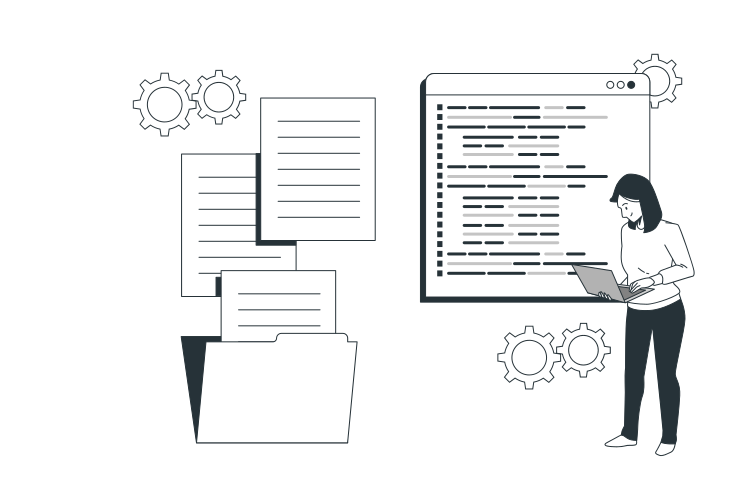
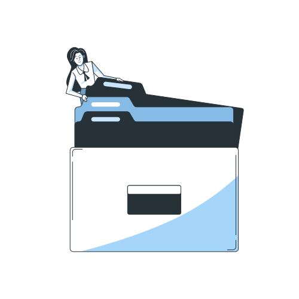
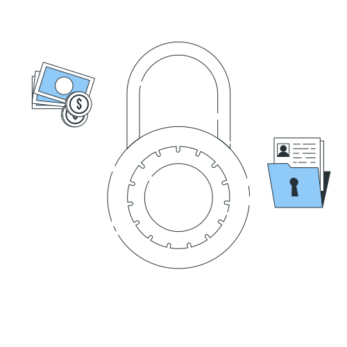
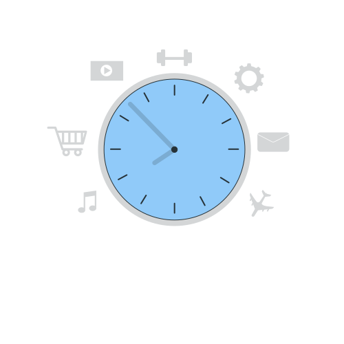

サービスの特徴

案件数が豊富
多様な案件から自分にぴったりの
仕事を選べます。
大手企業からスタートアップまで、
全国のIT・Web関連の案件を
豊富に取り揃えています。
フロントエンド・バックエンド・
アプリ開発・インフラ・クラウドなど、
さまざまな職種とスキルレベルに対応。
自分のライフスタイルや
キャリアビジョンに合わせた
案件選びが可能です。

非公開の高単価案件
ここでしか出会えない
希少な案件をご紹介。
一般には公開されない
高単価・高待遇の案件情報を
多数ご用意。
登録フリーランスだけに
限定公開されるため、競争率も低く、
より条件の良い案件への参画が
期待できます。
経験やスキルに応じたマッチングで、
理想の働き方と収入アップを実現します。

柔軟な働き方
ライフスタイルに合わせた
自由な働き方が叶います。
週1日～、リモートワーク、
フルリモート、フレックスタイムなど、
さまざまな働き方の案件をご提案。
副業・複業から独立まで、
あなたのキャリアステージに
最適な案件をご紹介します。
安心して長期的なキャリア形成ができる
サポート体制も整えています。
このような方におすすめ...
フリーになったけど
案件が安定しない人
スキルはあるが営業が苦手
リモート・副業から始めたい
ユーザーの声
Web
エンジニア/30代/東京
フリーランスとして独立したばかりで不安も多かったのですが、
登録してすぐに担当の方が丁寧にヒアリングをしてくれて、
登録から3日で初案件が決まりました！
フロントエンド
エンジニア/20代 /大阪
本業の合間に副業案件を探していましたが、
自分のスキルや希望条件に合った案件をすぐに紹介してもらえました。
対応も丁寧で安心してスタートできました。
バックエンド
エンジニア/30代/福岡
フリーになったものの、自分で営業するのが本当に苦手でした。
こちらに登録してからは担当の方が間に入ってくれて、
すぐに初案件が決まりました。
よくある質問 (Q&A)
Q1. 登録や利用に費用はかかりますか？
A. 登録から案件紹介、マッチングまで完全無料でご利用いただけます。
成約時のみ契約内容に応じた報酬が発生します。
Q2. 実務経験が浅いのですが、案件を紹介してもらえますか？
A. はい。経験の浅い方でも対応可能な案件や、スキルアップを目指せる案件も多数ございます。
担当コンサルタントが最適な案件をご提案しますのでご安心ください。
Q3. 副業や週1〜2日の案件もありますか？
A. はい。副業・複業向けや、週1日から対応可能な案件もご紹介しています。
ご希望の働き方をお知らせください。
Q4. リモート案件の紹介はありますか？
A. はい。フルリモート・一部リモート案件ともに豊富に取り扱っています。
ご自宅や好きな場所での勤務が可能です。
Q5. 登録後はどのような流れで案件に参画できますか？
A. 登録後、担当者よりヒアリングのご連絡を差し上げます。
ご希望やスキルをもとに案件をご提案 → 応募・面談 → 条件合意後に参画という流れです。